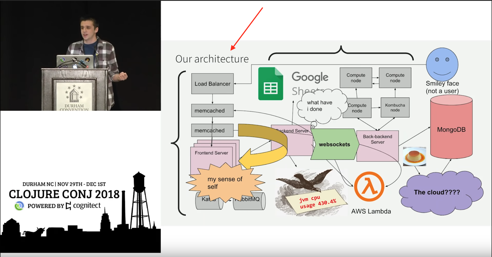
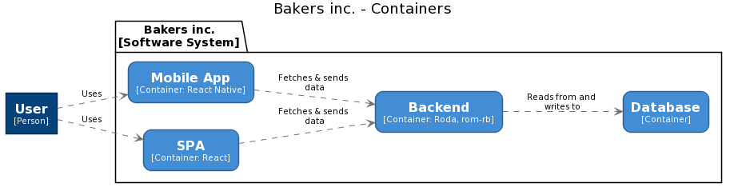
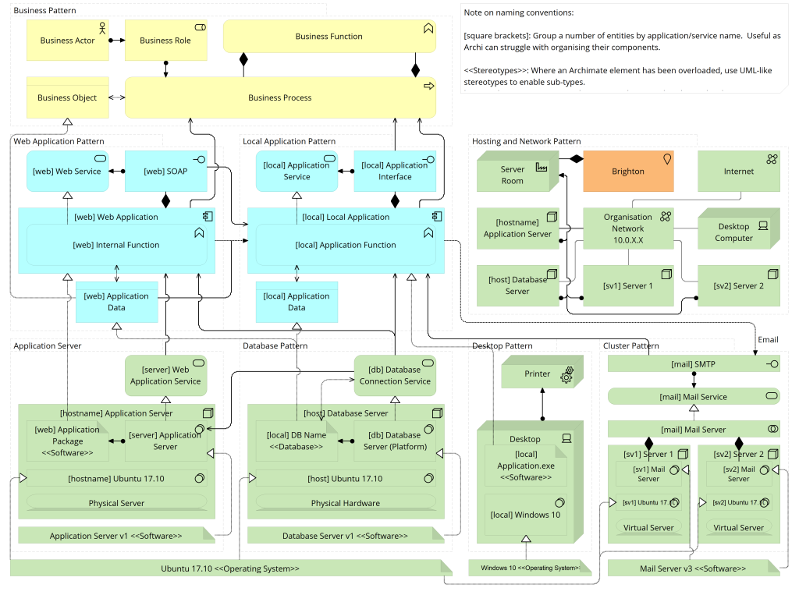

Модель С4
Зачем нам моделировать архитектуру
Я — Игорь
- В руби с 2016
- Писал на всяком, в основном на руби
- Не очень хорош с рельсой
- ❤️ энтерпрайзную разработку
- Делаю Bookmate.com
О чём не будем говорить
- Микросервисы или монолиты
- Чистая архитектура
- Шаблоны проектирования
- Domain-Driven Design
- Монады
- dry-rb / rom-rb / hanami / rails
О чём поговорим
- Что такое архитектура
- Как мы обычно с ней работаем (*)
- Как сделать левелап при помощи моделирования
* по крайней мере, я
Что такое архитектура
Это архитектура
class Person
... # methods here
end
class Admin < Person
end
class Customer < Person
end
Это тоже архитектура

И это

https://youtu.be/jlPaby7suOc
Снова архитектура

Архитектура!

Всё это архитектура
Что такое архитектура?
The software architecture of a system depicts the system’s organization or structure, and provides an explanation of how it behaves.
Synopsis
Architecture is the fundamental organization of a system, embodied in its components, their relationships to each other and the environment, and the principles governing its design and evolution
ISO/IEC/IEEE 42010
In most successful software projects, the expert developers working on that project have a shared understanding of system design. This shared understanding is called ‘architecture.’
Martin Fowler
Architecture is about the important stuff. Whatever that is
Ralph Johnson
Архитектура — о проблемах на разном уровне
Как мы с этим обычно работаем
Типичные сценарии
- Думаем о рефакторинге
- Придумываем, как добавить фичу
- Исследуем
- Аудит
- Онбординг
Что мы делаем
- Смотрим, как что-то устроено
- Придумываем, как что-то должно быть устроено
- Рассказываем об этом
Проблема: разрозненность информации
Проблема: не тот уровень абстракции
Проблема: нет единого языка
Результат
- Одна диаграмма
- С кучей квадратиков
- И стрелочек
- В некоторых квадратиках есть другие квадратики
Решение: система
Добавляем квадратикам смысл и правила
Модель C4
Абстракции + принципы
Пример: Baqers
Система для заказа выпечки
Верхний уровень: Software System
Система приносит ценность. Человеку или машине
Следующий уровень: контейнеры
Приложения и базы данных
Если есть процесс — это контейнер
Ещё глубже: компоненты
Суть компонентов определяем сами
Примеры: неймспейсы, функции, классы, связанные контексты
Дальше только код
UML и всё такое
Модель загоняет в рамки
Нам не нужны технологии
Листок бумаги, ручка и мышление
Базовые принципы
- Самое важное — пользователи, системы, контейнеры и компоненты
- Рисуешь квадратик — подпиши
- У связей тоже есть технологии
- Несколько диаграмм — хорошо
Дальше — практика и опыт
И взаимопонимание
Моделировать можно кодом
Java, C#, TypeScript, Python, скоро и JRuby
… но про это в другой раз
Итоги
Архитектура — про важное, что бы это ни было
А ещё про составные части, связи между ними и принципы
Архитектор — это профессия
Но роль архитектора занимают опытные программисты
Приходится изучать, придумывать и рассказывать
Важно быть на нужном уровне абстракции
Как при изучении, так и при рассказе
Нужна система
Например, модель C4
Модель даёт нам абстракции и принципы
И становится проще понимать друг друга
А ещё можно делать кодом
Спасибо! 💚
- c4model.com
- t.me/saintprug/60354
- git.io/JTDcl ← gist с моделью